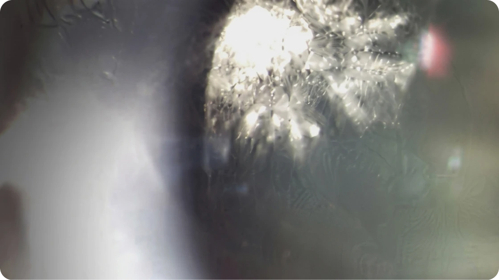
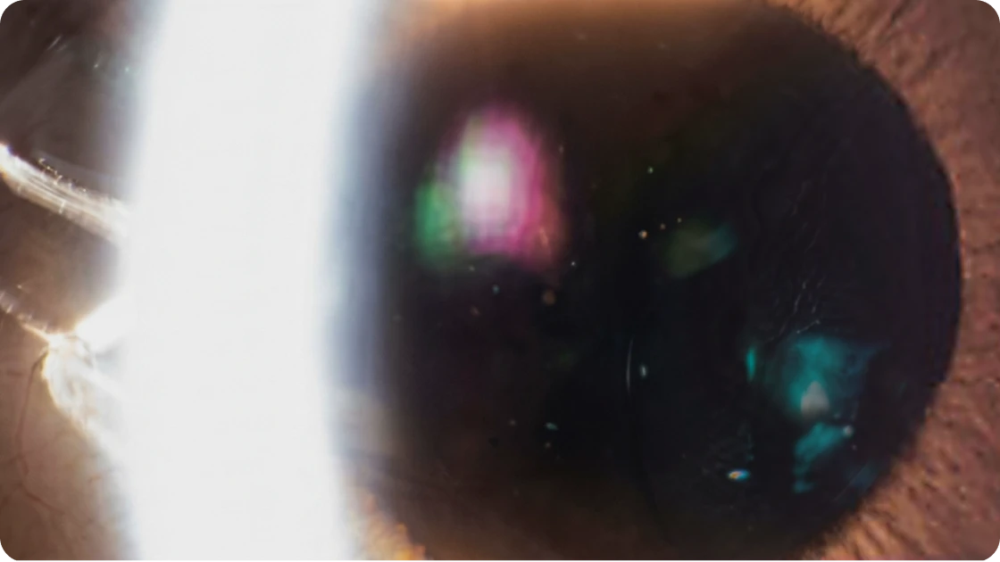
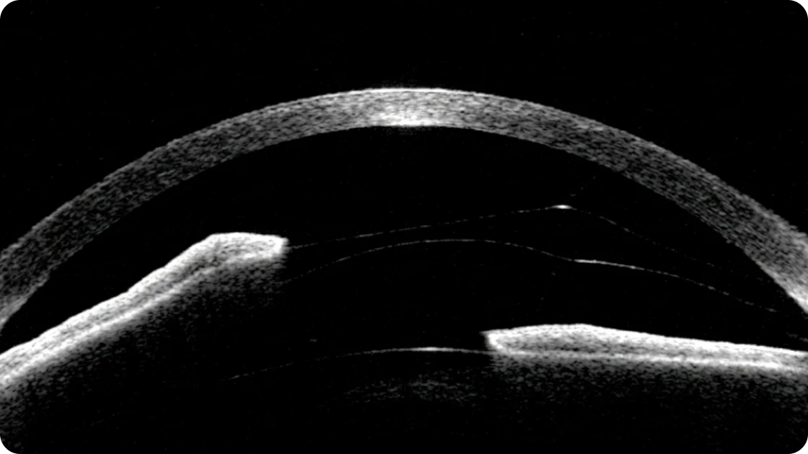
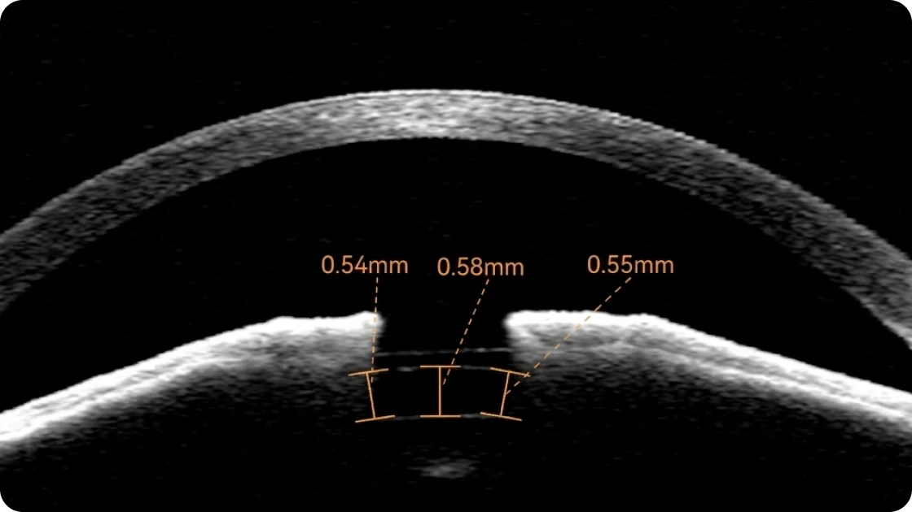
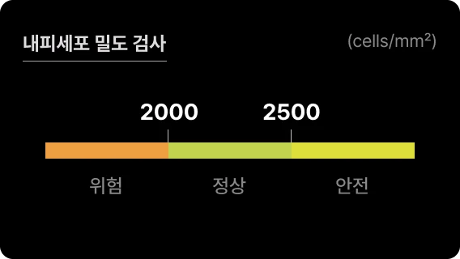
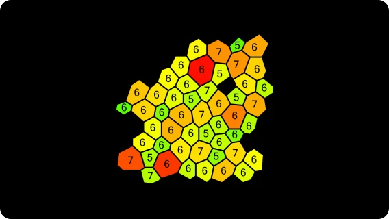
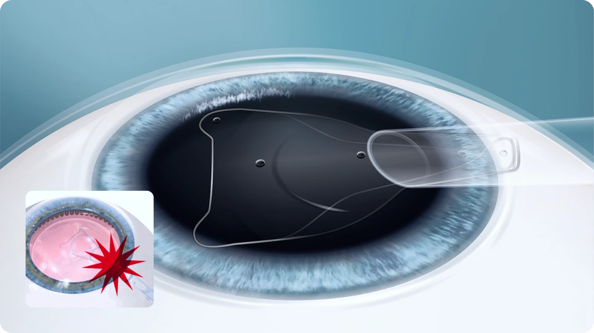
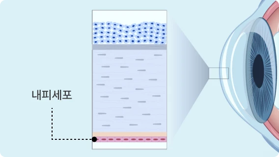
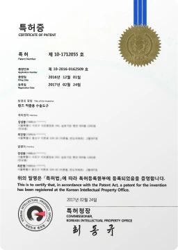
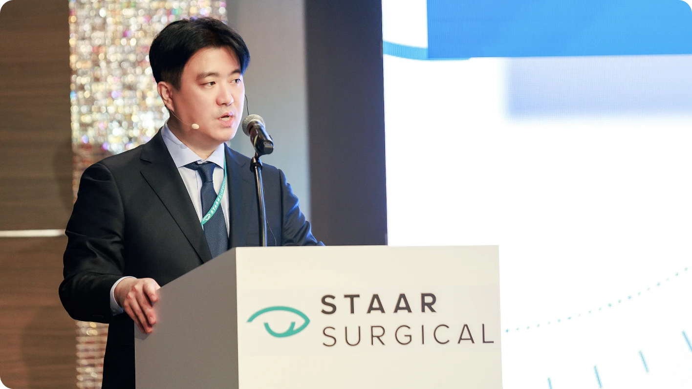

본 내용은 아이리움안과의 실제 치료 사례이므로 해당 내용과 이미지의
무단 복제 및 배포를 금합니다.
잘못된 렌즈 선택, 부정확한 수술 설계, 부족한 사후관리로 인해 렌즈삽입술 후 불편이나 합병증이 발생할 수 있습니다. 아이리움안과는 타원 의뢰 환자까지 정밀하게 진단하고, 렌즈 제거·교체·백내장 수술 등 필요한 치료를 신중하게 결정합니다.
ICL Complication Treatment Cases
후방렌즈 부작용 렌즈 제거 후 백내장 수술
ICL 수술 후 렌즈와 수정체 사이의 거리(Vaulting)가 좁아 백내장 진행된 사례. 후방렌즈 ICL을 제거하고 백내장 수술 진행

이미 백내장 진행, 렌즈 제거 후
백내장 수술 진행
(2016.8.29 촬영)

백내장 수술 후 시력 0.9로 회복
(2016.10.6 촬영)
렌즈삽입한 눈을 다쳐 재수술을 받은 환자
전방렌즈삽입술 후 오른쪽 눈에 외상을 입어 렌즈가 원래 위치에서 이탈한 사례. 렌즈 위치 교정 수술 진행

후방렌즈가 원래 위치에서 이탈한 모습

응급수술로 다시 안전한 위치를 잡음
전방렌즈 부작용 내피세포 손상, 제거
전방렌즈삽입술 후 오른쪽 눈에 외상을 입어 렌즈가 원래 위치에서 이탈한 사례. 렌즈 위치 교정 수술 진행


아이리움안과 의료진 렌즈 적출용 수술도구 특허 획득 (2017년 2월)

렌즈삽입술 재수술이 필요한 경우

각막내피세포
아이리움안과 의료진은 안내렌즈 적출 및 교체 과정에서 렌즈를 보다 안정적으로 조작할 수 있도록 고안한 수술 기술도구 특허를 보유하고 있습니다.

